Exemplo de esquema do banco de dados
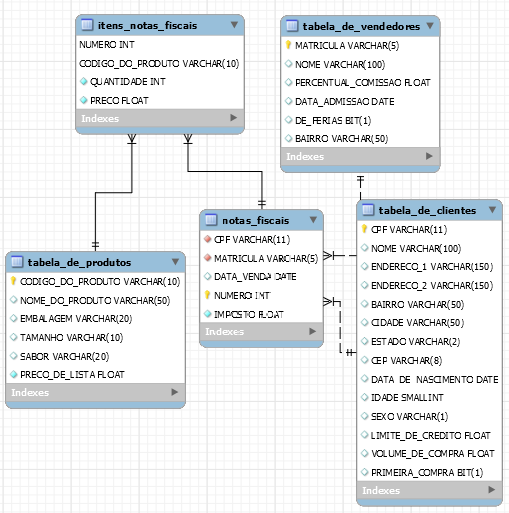SELECT *
FROM nome_da_tabela
WHERE campo
LIKE condição
condição - texto a ser usado. O símbolo '%' é usado para representar qualquer registro genérico
Exemplos:
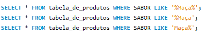Exemplo 1:Indica o sabor que tem a palavra "Maça" no início ou fim da frase
Exemplo 2:Indica o sabor que tem a palavra "Maça" no fim da frase
Exemplo 3:Indica o sabor que tem a palavra "Maça" no início da frase
Os exemplos 1 e 2 retornam:
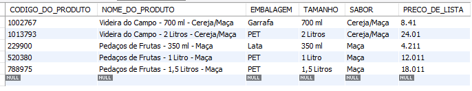O exemplo 3 retorna:
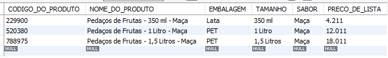SELECT DISTINCT *
FROM nome_da_tabela
Exemplos:
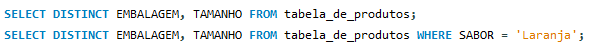SELECT *
FROM nome_da_tabela
LIMIT valor_limite
Exemplos:
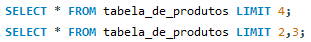O Exemplo 1 imprime os 4 primeiros registros da tabela e o Exemplo 2 imprime a partir do segundo registro os três próximos registros.
SELECT *
FROM nome_da_tabela
ORDER BY nome_do_campo
Exemplos:
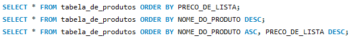ASC - mostra a saída em ordem crescente (padrão)
DESC - mostra a saída em ordem decrescente
SELECT nome_do_campo
FROM nome_da_tabela
GROUP BY nome_do_campo
Apresenta o resultado agrupando valores numéricos por uma chave de critério.
Exemplo: Queremos agrupar pelo campo X e somar os valores em Y
SELECT X
SUM(Y)
FROM nome_da_tabela
GROUP BY X
Podemos usar:
SUM: Soma
MAX: Valore máximo
MIN: Valor mínimo
AVG: Média
COUNT: contar ocorrências
Exemplos:
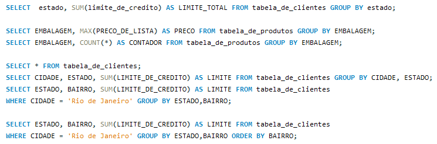O HAVING é uma condição (filtro) que se aplica ao resultado de uma agregação
Exemplo:
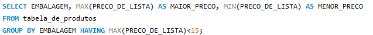CASE - Fazemos um teste em um ou mais campos e, dependendo do resultado, teremos um ou outro valor
Exemplo 1:
Exemplo 2:
JOINSs - possibilidade de unir uma ou mais tabelas através de campos em comum.
INNER JOIN - Retorna somente quando temos chaves correspondentes.
SELECT A.nome-do-campo, B.nome-do-campo FROM tabela-esquerda AINNER JOIN tabela-direira BON A.identificador = B.identificador
Exemplo:
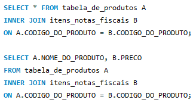Exemplo 2:
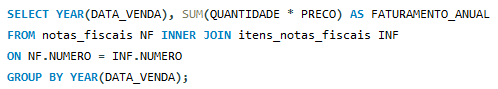LEFT JOIN - Retorna todos da tabela da esquerda e somente os correspondentes na tabela da direita.
SELECT A.nome-do-campo, B.nome-do-campo FROM tabela-esquerda ALEFT JOIN tabela-direira BON A.identificador = B.identificador
Exemplo 1:
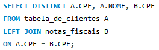Exemplo 2:
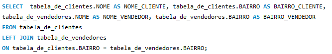RIGHT JOIN - Retorna todos da tabela da direita e somente os correspondentes na tabela da esquerda.
SELECT A.nome-do-campo, B.nome-do-campo FROM tabela-esquerda ARIGHT JOIN tabela-direita BON A.identificador = B.identificador
Exemplo 1:
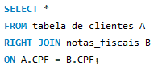Exemplo 2:
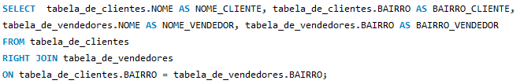FULL JOIN - Retorna todos os registros de todas as tabelas.
SELECT A.nome-do-campo, B.nome-do-campo FROM tabela-esquerda AFULL JOIN tabela-direira BON A.identificador = B.identificador
OBS: No MySQL não é possiível usar o comando FULL JOIN ao invés disso usamos os comandos LEFT JOIN UNION RIGHT JOIN
Exemplo:
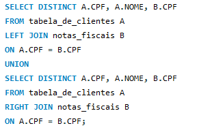CROSS JOIN - Retorna o produto cartesiano das duas tabelas
SELECT A.nome-do-campo, B.nome-do-campo FROM tabela-esquerda A, tabela-direira B
Exemplo:

UNION - Faz a união de duas ou mais tabelas. Aplica o distinct no resultado final. As tabelas que serão unidas precisam ter o mesmo número e tipo de campo.
Exemplo
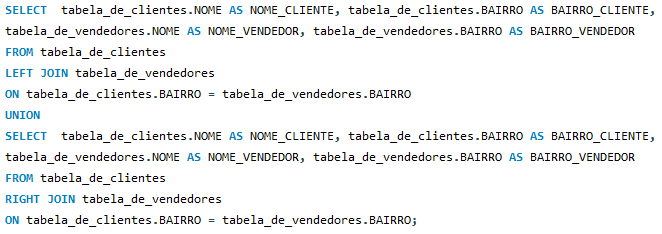UNION ALL - Faz a união de duas ou mais tabelas. NÃO aplica o distinct no resultado final. As tabelas que serão unidas precisam ter o mesmo número e tipo de campo.
Exemplo
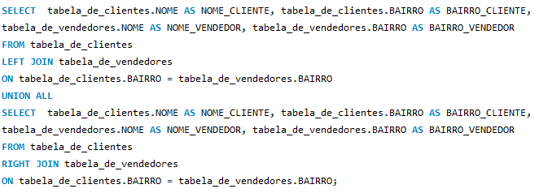Podemos usar uma subconsulta dentro de uma consulta
Exemplo 1 :
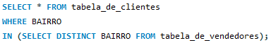Exemplo 2 :
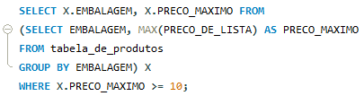Exemplo 3: Códigos equivalentes usando having e subconsulta
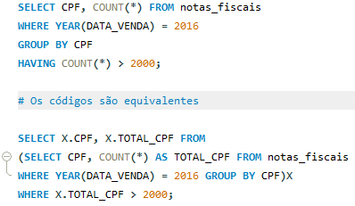A view é uma tabela lógica, resultado de uma consulta, que pode ser usada depois de qualquer outra consulta.
Exemplo de como criar a View
Exemplo de consulta usando a View criada
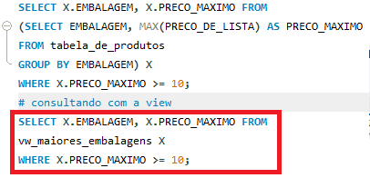Exemplos de funções escalares - funções de texto (String Functions)
Exemplos de funções de data (Date Functions)
Exemplos de funções matemáticas (Numeric Functions)
Exemplos de conversão:
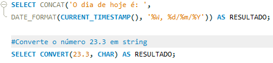Exemplo 2 de conversão:
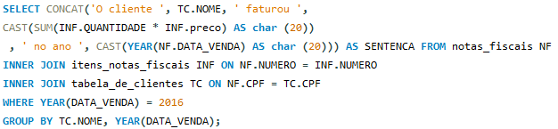Exemplo de uma consulta mais extensa
Exemplo 1:
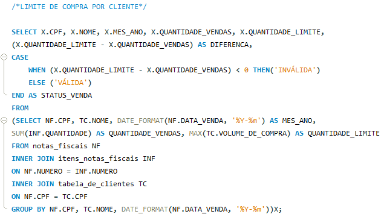Exemplo 2:
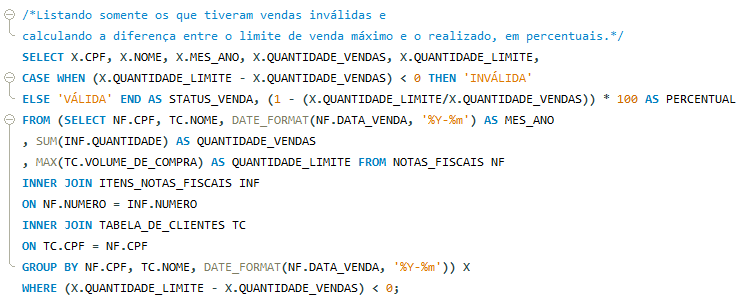Exemplo 3:
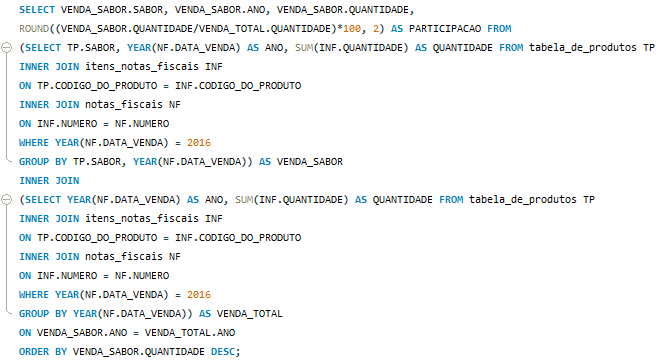